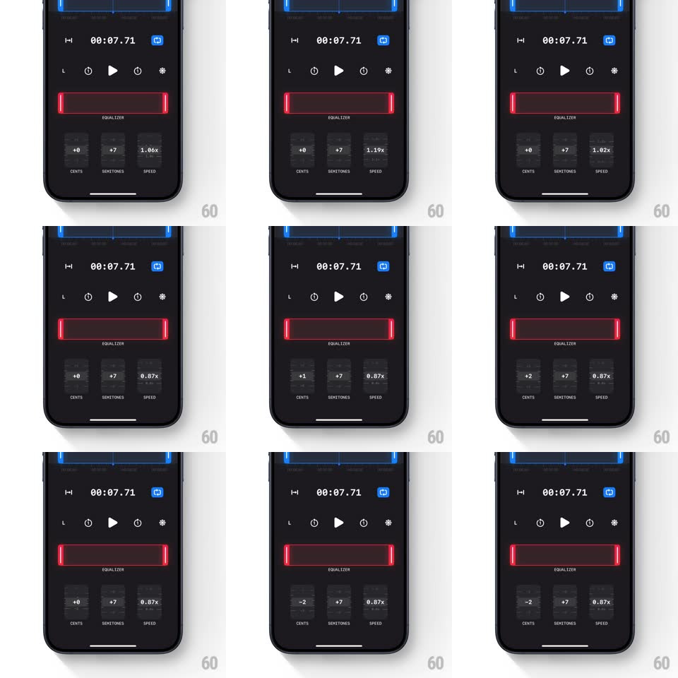

Media
Frame-by-frame

Rebuild this interaction 1:1: BlueNote's equalizer sliders - three tactile vertical wheels (cents, semitones, speed) with springy snapping and scrolling numbers on a dark audio editor.

Rebuild this interaction 1:1: BlueNote's equalizer sliders - three tactile vertical wheels (cents, semitones, speed) with springy snapping and scrolling numbers on a dark audio editor.
## Integration
Integration: stack-agnostic spec - springs given as stiffness/damping, timed motions as duration + curve; map every value to your framework and animation library of choice.
## Scene
A dark audio player/editor: blue waveform strip at top, timestamp and transport controls, a red-outlined EQUALIZER section holding three vertical wheel sliders labeled CENTS, SEMITONES, and SPEED, showing values like "+0", "+7", "1.00x".
## Motion spec
Pattern: vertical wheel slider with snap.
- Drag a wheel vertically: the value track follows the finger 1:1, digits scrolling continuously (like a slot reel) through intermediate values with motion blur/fade between them.
- On release: the wheel snaps to the nearest valid step (cents: +-1; semitones: +-1; speed: 0.01x steps) with spring ~500/28, a subtle overshoot of one half-step before settling.
- Flick: velocity carries the wheel through multiple steps with exponential decay (friction ~0.92/frame), snapping at the end; steps tick softly (haptic + 40ms highlight flash on the current value) as they pass.
- The active wheel's label and value brighten (opacity 0.6 to 1); the other two dim.
- The red equalizer frame pulses faintly (border opacity 0.7 to 1, 200ms) when any wheel snaps, confirming the change applied.
- Values clamp at range ends with a rubber-band pull (max 20px overscroll) and bounce back.
## Calibration
- Digit reel must stay legible: max scroll speed where adjacent values blur is a cue to fade, not smear - fade trailing digits to 30% opacity.
- Snap lands exactly on step centers; no drift accumulation across flicks.
## Reduced motion
Values change instantly on release; no reel scroll.
## Don't miss
- SPEED displays as a multiplier ("0.87x") while CENTS/SEMITONES show signed integers ("-2", "+7").
- The wheels are frameless - just the number column and label; the red border belongs to the whole equalizer group, not each slider.